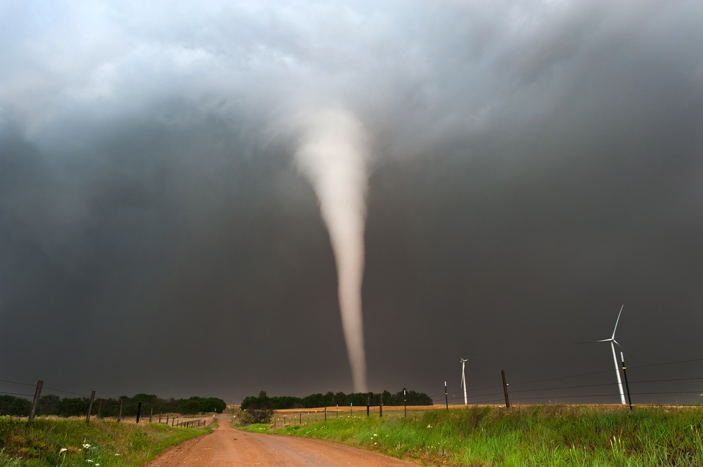

Weather and Climate App
လေဆင်နှာမောင်း

လေဆင်နှာမောင်းသည်မုန်တိုင်းကြီးများနှင့်တွဲလျက်ပါလာသောမိုးတိမ်တောင် (Cumulonimbus)သို့မဟုတ်သီးခြားဖြစ်ပေါ်သည့်မိုးတိမ်တောင်ကြီးများ၏အောက်ခြေတွင်ဖြစ်ပေါ်သောပြင်းထန်သည့် မိုးလေဝသဖြစ်စဉ်တစ်ရပ်ဖြစ်သည်။ လေဆင်နှာမောင်းမှာတိမ်တိုက်အတွင်းအထက်တက်လေနှင့်အောက်ဆင်းလေများသည် အချင်းချင်း ပွတ်တိုက်လျက် လေပွေ(Vortex) အငယ်စားဖြစ်ပေါ်ရာမှအောက်ခြေမြေပြင်ပေါ်ရှိအရာဝတ္ထုနှင့် အဆောက်အဦ၊အပင်များကိုအပေါ်သို့ဘယ်ရစ်ရစ်လျက်ပင့်တင်ဆွဲယူသွားပြီး၊ဖြစ်စဉ်အတွင်း လေတိုက်နှုန်းမိုင် ၆၀ မှ ၈၀ ခန့်နှုန်းဖြင့်သယ်ဆောင်တိုက်ခတ်သွားခြင်းဖြစ်ပါသည်။ဖြစ်ပွားချိန်မှာ (၁၅)မိနစ်မှ (၃၅)မိနစ်ခန့်သာကြာပြီး ထိခိုက်မှုဧရိယာမှာလည်း (၁)မိုင်အောက် လျော့ပါသည်။ အဆိုပါဖြစ်စဉ်သည်ပင်လယ်ထဲ၌ ဖြစ်ပါက ရေဆင်နှာမောင်း(Water spout)ဟုခေါ်ပါသည်။
နောက်ပြန်သွားရန်
ရှေ့သို့